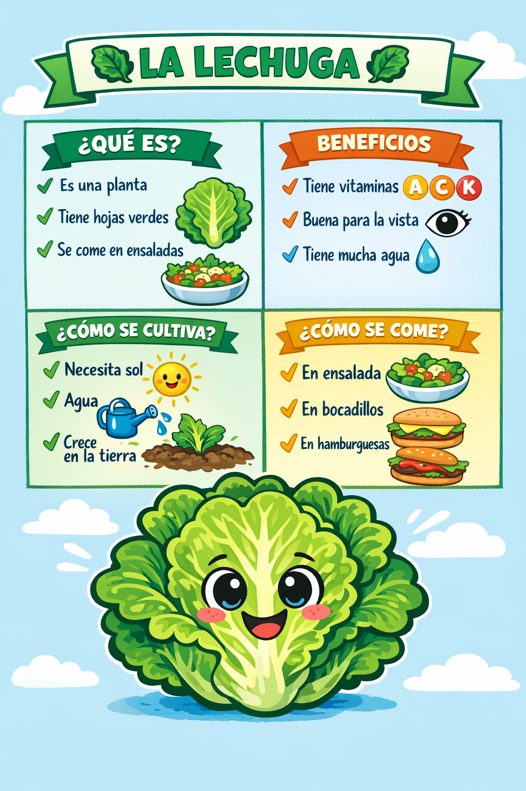

Un código QR es un código bidimensional que almacena información digital accesible con móviles o tablets. En un invernadero escolar, permite identificar cada cultivo de forma rápida e interactiva. Al escanearlo, se puede consultar información como nombre, cuidados y evolución de la planta. Facilita la organización y actualización de datos sin cambiar etiquetas físicas.
El Código QR nos llevará directamente a una ficha de cultivo identificación de cultivos en la que encontraremos toda la información necesaria para su identificación, cuidados, usos comestibles, beneficios para nuestr cuerpo, etc.
